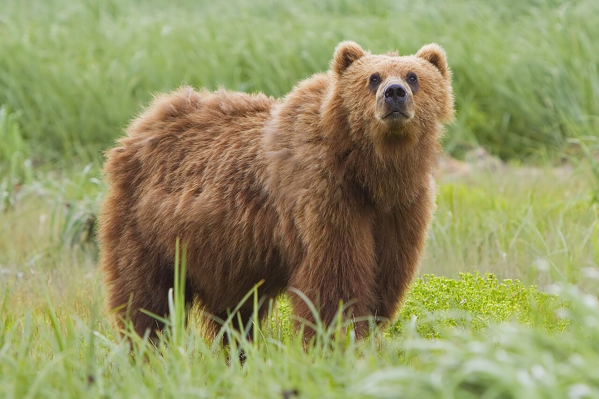

Bear
Large omnivores found across forests and mountains.
- Species: Ursus arctos
- Diet: Omnivore
- Size: 5�10 ft
- Weight: 200�900 lbs
- Life span: 20�30 years
- Habitat: Forests, tundra, mountains
- Found: North America, Europe, Asia
- Can be pet: No
Trivia: Bears can run faster than humans, reaching speeds up to 35 mph.